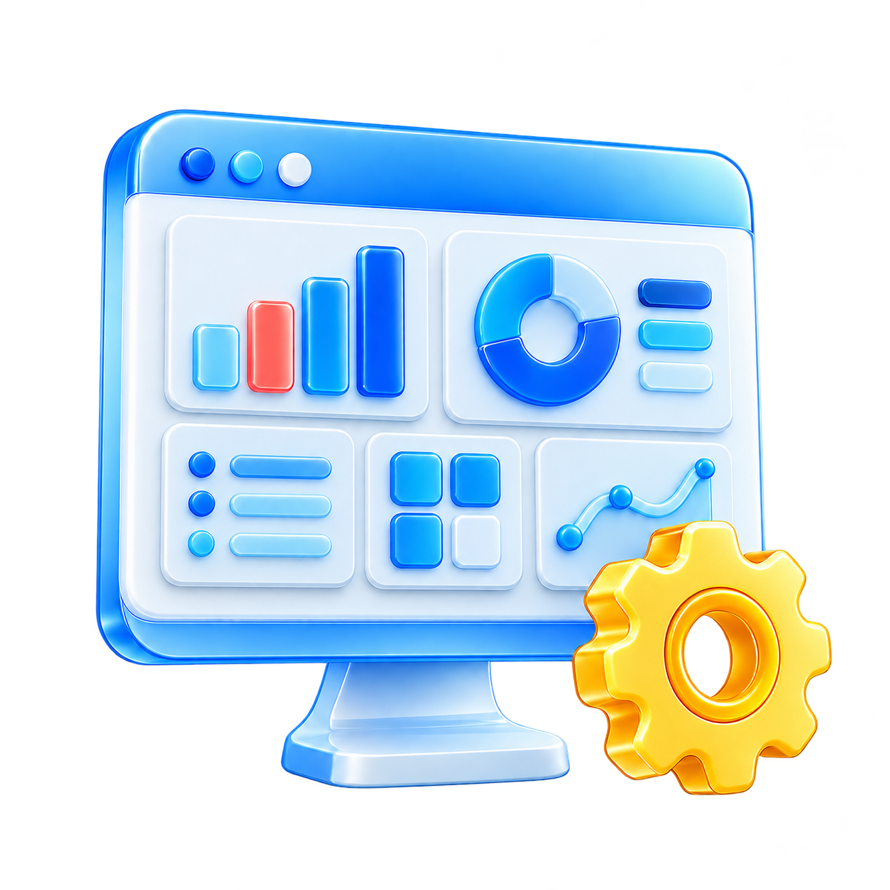
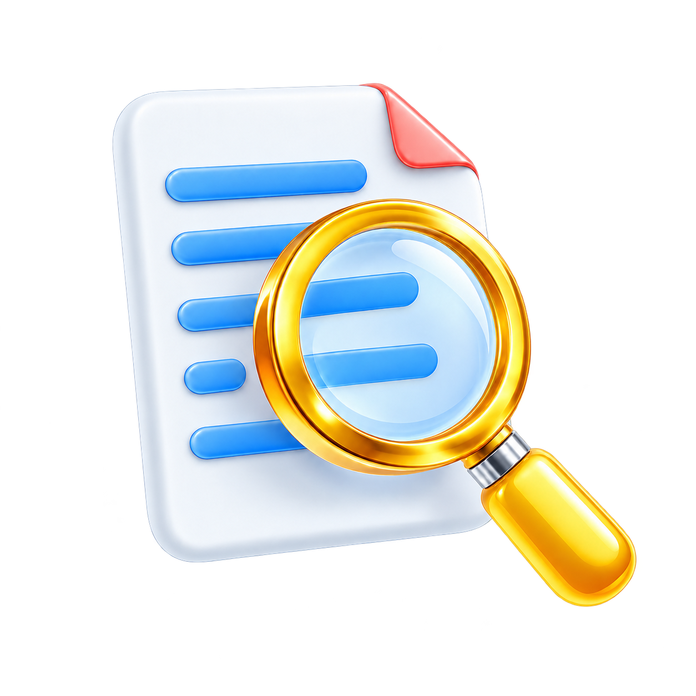
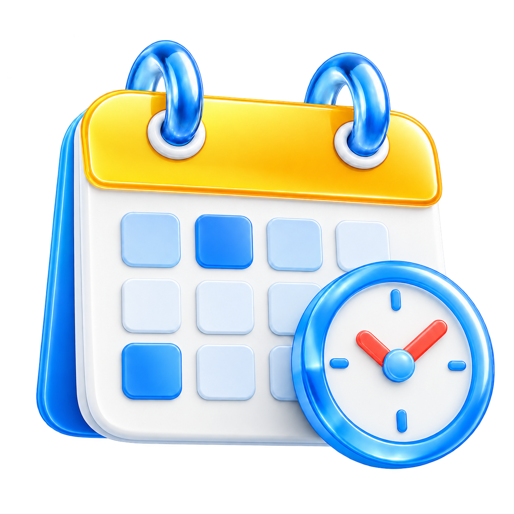
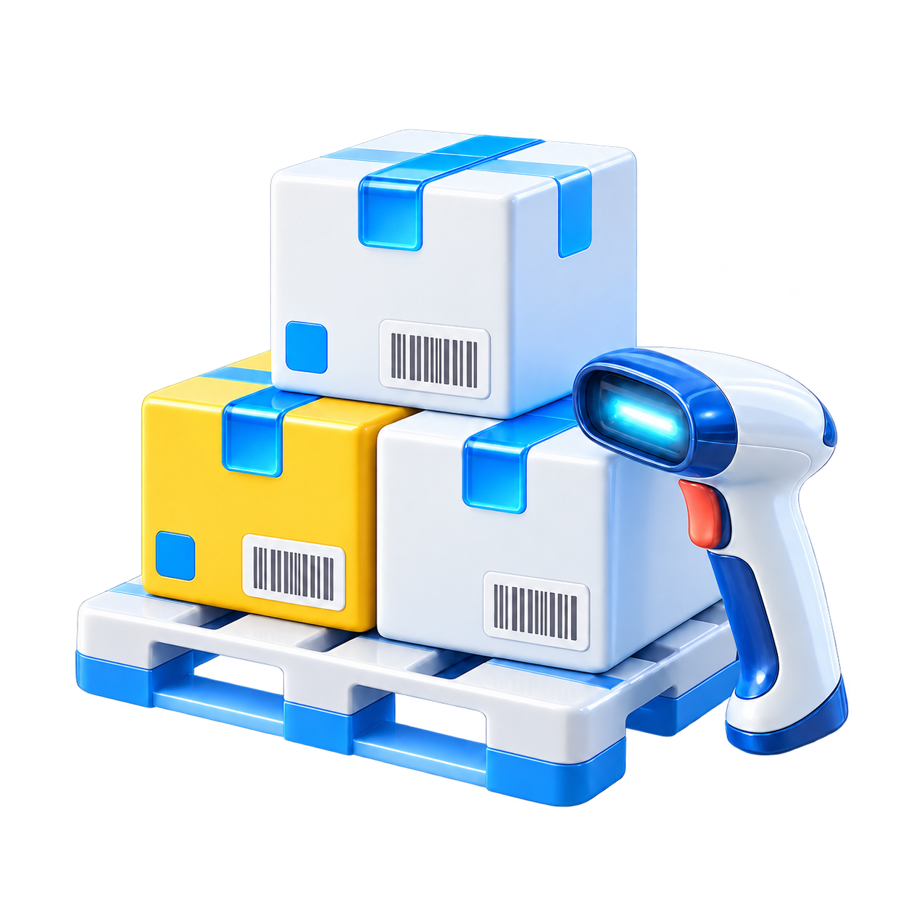
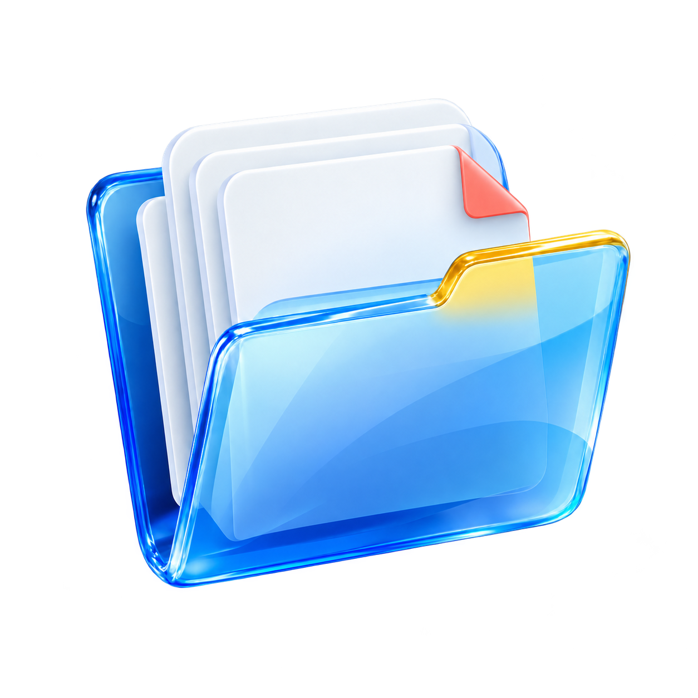
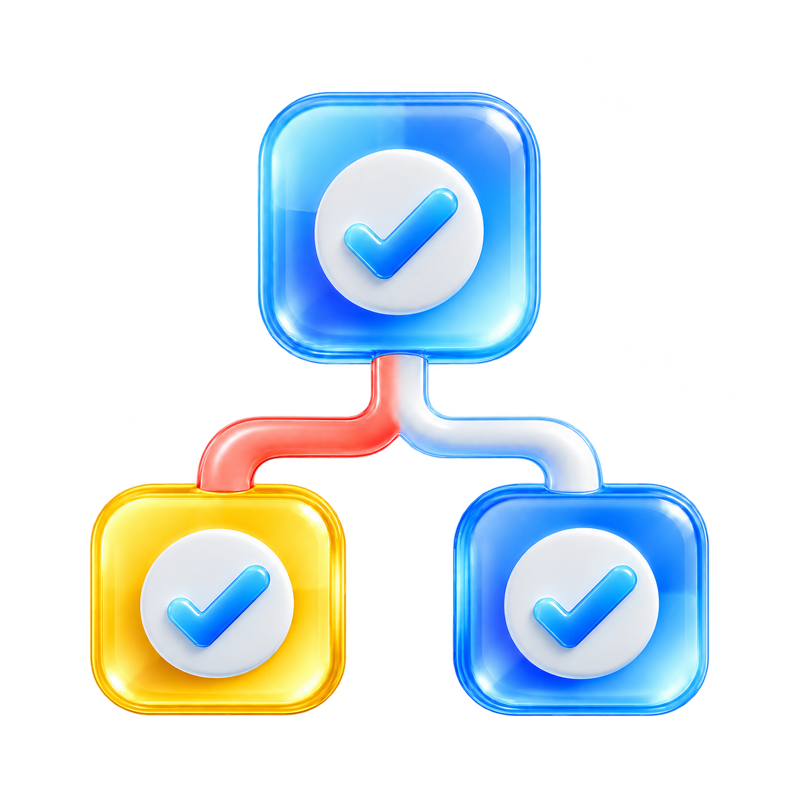
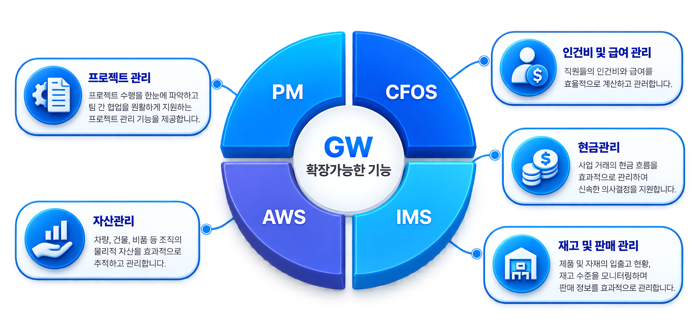

전자결재 시스템
사내 프로세스를 효과적으로 관리하기 위한 전자결재 시스템을 제공하여 업무 흐름 최적화
Product & Service
ERP·그룹웨어·AI가 하나로 융합된 더존 차세대 통합 비즈니스 플랫폼
PMS는 간편하고 직관적인 인터페이스를 통해 사용자들이 프로젝트를 효과적으로 관리할 수 있도록 지원합니다.
이를 통해 프로젝트 수행의 투명성을 높이고, 프로젝트 팀이 협력하여 성공적으로 프로젝트를 완수할 수 있도록 돕습니다.

프로젝트 정보개요
프로젝트의 핵심 정보 한눈에 파악
프로젝트 목표, 기간, 예산 등의 기본 정보를 정리하여 프로젝트 이해도를 높이고 계획 수립에 도움을 줌

진척현황 모니터링
프로젝트 진행 상황 실시간 모니터
과업 단계, 마일스톤 달성, 작업 일정 등의 핵심 지표를 시각적 확인
팀 간의 협업과 의사결정 지원
인력배정 및 협업
효율적인 인력 관리를 위해 프로젝트 팀원의 역할 및 책임을 명확히 할당
각 팀원 간의 협업을 원활하게 지원
실시간 채팅, 업무 공유 기능 통한 팀 협업성 강화

원가분석 및 예산관리
프로젝트의 원가 체계적 분석 및 예산 효과적 관리
예산 초과 및 경비 분석 통한 재정 통제 강화
경제적, 효율적인 프로젝트 수행 지원
쉽고 직관적인 환경에서 통합된 프로세스와 데이터를 기반으로 신속정확한 정보 제공을 통한 전략적 의사결정을 지원하는 통합 시스템



쉽고 직관적인 환경에서 통합된 프로세스와 데이터를 기반으로 신속정확한 정보 제공을 통한 전략적 의사결정을 지원하는 통합 시스템
핵심성과지표를 중심으로 비즈니스의 현재 상황을 종합적으로 파악하고,
목표 달성 여부를 효과적으로 관리하며,
미래 전략 수립을 위한 중요한 인사이트를 제공합니다.
단순히 계약 건수를 보여주는 것을 넘어,
각 계약이 가져오는 잠재적인 가치를 평가하고,
현재 진행 중인 영업 활동의 성과를 측정하며,
향후 영업 전략 수립에 필요한 통찰력을 제공합니다.

그룹웨어솔루션은 거래량이 상당해져 거래내역을 전부 파악하고 승인하는 것이 어려워졌을 때, 업무관리에 어려움을 겪는 기업을 위해 개발되었습니다.
사내 프로세스를 효과적으로 관리하기 위한 전자결재 시스템을 제공하여 업무 흐름 최적화
데이터 기반의 손익현황과 분석 기능을 통해 조직의 재무 상태를 파악하고 미래 비즈니스 전략을 수립, 실행할 수 있도록 지원

조직의 업무 성과를 평가하고 개선하기 위한 다양한 형태의 보고서와 분석 도구 제공
그룹웨어 솔루션은 조직의 규모에 맞게 확장 가능하며, 핵심적인 전자결재, 손익현황 분석, 다양한 보고서 분석 도구를 통해 업무 효율성을 높이고 의사결정 속도를 향상시킵니다.

프로젝트를 중심으로 계약 정보를 통합적으로 관리하고
시각화하여, 프로젝트의 진행 상황을 한눈에 파악하고,
효율적인 자원 배분 및 우선순위 설정을 가능하게 함으로써
프로젝트 관리의 효율성을 극대화합니다.
각 프로젝트의 세부적인 진행 상황과 관련된 핵심 정보를
통합적으로 파악하고 관리할 수 있도록 설계되었습니다.
이는 프로젝트의 시작부터 완료까지 필요한 모든 주요 정보를
한눈에 확인하고, 잠재적인 문제점을 조기에 발견하여
효율적인 프로젝트 관리를 가능하게 합니다.
매출, 손익, 목표 달성률을 심층적으로 관리하고
분석 정보를 제공하여, 주간회의 결과 및 결정 사항을
공유하여 실행력을 높이고, 이를 통해 데이터 기반의
상세한 성과 관리 및 업무진행 기능을 제공
결재 진행 상황을 투명하게 관리하고
결재 문서의 효율적인 작성 및 결재
프로세스를 제공
자원사용 현황을 통합적으로 보여주고
회의실, 장비 등 자원 등록 및 예약 관리
기능을 제공